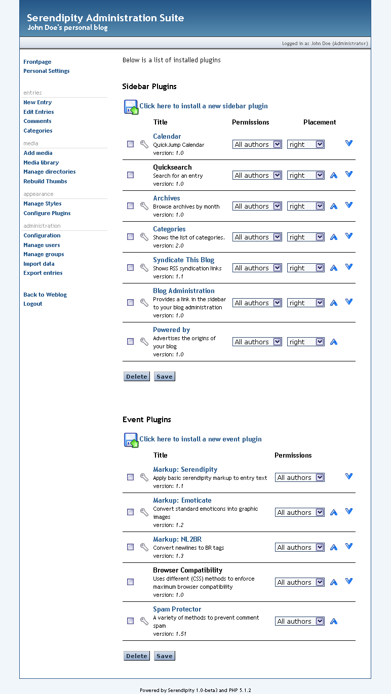

Fresh Installation
Preface
Serendipity is a PHP-based web application. That means, to use Serendipity, you need to have access to a Web Server that has PHP support enabled. You upload the Serendipity files to that Web Server (by using FTP, SSH or other means) into a directory that is part of your Web Servers document tree.
After you have uploaded the files to your web space, you need to "open" the Serendipity application. You do that by opening an URL like http://yourdomain.com/serendipity/index.php.
Requirements
Serendipity is tailored for the Apache Webserver. However, people are successfully running Serendipity with Microsoft IIS and Lighttpd. When using Serendipity on Windows servers, pay attention to always enter path references using forward slashes ('/') instead of the notation using backslaches ("C:\...\").
For full operation, Serendipity relies on .htaccess files that your Virtual Host? must allow. For Apache, this requires the "Allow Override? File Info? Indexes Limit" (or "Allow Override? All") option set to the directory of your Serendipity installation.
Serendipity requires PHP >= 4.3.0 and fully enabled and working Cookie Session support. It requires the PCRE extension, and optionally makes use of the GD, iconv, zlib and mbstring extensions. Serendipity is fully PHP 5.x compatible and encourages the use of PHP bytecode compilers like APC, Zend Cache? or ionCube.
When operating Serendipity in PHP's Safe Mode?, you will not be able to use File Upload and SPARTACUS Plugin fetching facilities. Enabling error_reporting and display_errors (or directing this to a logfile) is suggested to keep track of possible errors. The file_uploads directory should be turned ON if you want to have media file upload features. For graphic processing, you either require GDLib or Image Magick?.
It is very much suggested to DISABLE the register_globals, session.use_trans_sid and magic_quotes_* directives of PHP.
You require at least one of the following Database Extensions and a Database Server of the same kind: MySQL(i), PostgreSQL, SQLite.
Write access must be granted to:
- .htaccess [created on installation]
- serendipity_config_local.inc.php [created on installation]
- archives/
- templates_c/
- uploads/
- plugins/ (if you plan to use Spartacus plugin)
- templates/ (if you plan to use Spartacus plugin)
Uploading Serendipity
You can install Serendipity into either your document root of the web server, or into any subdirectory you like. Make sure that you upload ALL files that you extracted from your Serendipity release .ZIP or .TGZ file, including empty directories. Make sure, your FTP editor doesn't report any trouble or permission errors when uploading Serendipity files.
Permissions on Files/Directories
Very important to Serendipity are the directories archives, templates_c and uploads. The directory archives is used to store pregenerated files, the directory templates_c will contain automatically compiled HTML templates from the Smarty Templating Engine and the directory uploads will contain any media files you upload to your Blog. This means, all three folders will require write access for your webserver.
PHP usually runs as a specific user that is different from the FTP user account you use to upload files. So, if your FTP user is able to upload files, this does not necessarily mean, that the PHP process will be able to access the same files/directory. Depending on your webservers setup, you might need to change the permissions (CHMOD) of the three mentioned directory to something like 777 (read, write and execute permissions for everyone, meaning "world writable"), 775 (meaning read, write and execute permissions for the owner and the group of the files/directory, but not "everybody"). Which one to use is very specific to your webserver's setup. Please ask your provider, if you are unsure which permissions you need to use!
On top of those three directories, Serendipity will also need to write the two files .htaccess and serendipity_config_local.inc.php into the root of the Serendipity installation. That means that also the directory where you upload the full Serendipity installation into needs to have permissions that allow the PHP server to create those two files - so remember to also set your top directory (like "serendipity" or "blog") to 777 or 775. You can reset those permissions on the core directory after the installation to something like 744 again, because once the mentioned files are written, Serendipity only needs to alter those files.
If you plan to use the SPARTACUS plugin to download plugins and templates over the web, PHP also needs to be able to write to the directories plugins and templates.
Further permission-related questions are answered in our FAQ.
Installing
Once you have uploaded Serendipity to your web space you can call the installer interface via something like http://yourdomain.com/serendipity/index.php. It will take no longer than 1-2 minutes to install Serendipity.
On this screen, you will see a basic pre-installation report that shows you a diagnosis of your Web Server settings. All variables that possibly might create trouble are listed orange-coloured. You usually do not need to pay attention to those, unless you are experiencing errors. Here's an example screenshot:
Fatal problems are shown in red color. The most usual case of a red error is if Serendipity cannot create the directories templates_c, archives or uploads. In this case, please follow the suggestions in the "Permissions on Files/Directories" step of this documentation.
On the bottom of the diagnosis screen, you can choose if you want to perform a "Simple installation" or the "Expert installation". Both methods actually perform the same steps; however the "Simple installation" only shows you very few initial configuration options so that you can install Serendipity quickkly. The "Expert installation" will ask you to enter every configuration directive.
Since the goal of this Document is to show how fast you can install Serendipity, we will only discuss the "Simple installation" right now, so please click on this link and you will see a screen like this:
As you can see, this screen is divided into several sections.
Database Settings
In this section, you must enter the credentials to access the selected database. First you choose the database type you want to use for Serendipity. Serendipity will only show the database types that are available to PHP. Note, that your provider must have given you credentials to access your database, and that this database must already exist. Serendipity requires an empty database, so if you have not yet created a database, just do that via the SQL command "CREATE DATABASE serendipity" using your favourite SQL tool (phpMyAdmin, phpPgAdmin, sqliteAdmin).
Now you just fill in the values you got from your provider for the host, user, password and database name fields.
General Settings
This section contains the most basic Blog setup options. First you enter the username and password for your Admin user. It is recommended to not use special characters like Umlauts for the username. Your username will not be displayed in the blog to enhance login security - to display your username, the "real name" option will be used.
The E-Mail address of your admin user is very important, since you will receive trackback and comment notification emails to that address.
The blog name and description will later be shown on the frontpage of your blog. Of course, all those settings can later be changed!
As the last option of this section, you need to choose the language of your blog. Note that this will be the default language for both your frontend of the blog and the personal language of your editor. All other users you are later able to create can define their own language for viewing your blog!
Appearance and Options
In this section you will see a few customization options. The most important distinct option is whether to use the "WYSIWYG" editor. This will show you a Word-like interface for creating blog entries. WYSIWYG editors often create trouble because they use very generic HTML markup that hurts the eye of any HTML professional. On the other hand, if you do not know any HTML at all, you will be very glad about that editor that will allow you to insert images, links and text formatting at ease. This option can also be changed later, if you happen to dislike the WYSIWYG editor, or if you're missing it.
Complete installation
After you have entered all options, you click on the button "Complete installation". Serendipity will then try to connect to your database. If that fails, it will inform you of this.
Also, Serendipity will perform checks and create directories, so it might ask you to create some more directories/permissions as discussed above.
If you ever have troubles because of wrong auto-detected directories or URLs, you might need to call the "Expert installation" wizard. This gives you several additional configuration options to indicate the used directories, database table prefixes etc. Note well that the Expert Installation will show you the path layout as it currently is configured; if you change the path/URL locations there, you need to enter values that reflect your ACTUAL layout, and not the layout you would want. If you want to install Serendipity into a different directory than displayed, you need to move the files via FTP/SSH there.
Else, Serendipity will create the required database tables and sets up your blog as configured:

This screen tells you that Serendipity has created the tables, inserted your admin user account, installed default plugins and auto-created the ".htaccess" file.
REMEMBER WELL that if you ever want to reinstall Serendipity from scratch, you need to DROP all Serendipity-created Database tables. Else, reinstalling into the same database will Serendipity lead to think that it shall not re-create the tables and authors. This would then lead to duplicate inserted plugins and non-matching user credentials you entered!
Accessing your Blog Frontend
After the installation, the screen above showed you a link to "Visit your new blog here". You can click on this, and then you should see your empty blog like this:
If you instead see a "HTTP 500" error screen, this means that your Web Server did not allow Serendipity to create custom ".htaccess" directives. In this case, you can just delete the file ".htaccess". Serendipity can operate well without this file, BUT you will not be able to use "pretty URLs". Those pretty URLs are configured via the "URL Rewriting" option inside Serendipity Configuration.
Accessing the Admin panel
After you've installed Serendipity, you most probably want to access the admin interface to customize further options. You can do that by calling your URL http://yourdomain.com/serendipity/serendipity_admin.php - a link to the admin interface is also shown on the Blog Frontend, as you might have noticed.
Accessing this interface will give you a login screen:
Enter the user details there, which you specified in the installation. By default this is username "John Doe" and password "john". If you check the box "Save information" below, this will make Serendipity save a persistent Cookie on your client, and you can auto-login to your panel any time you want. Note that if you are not the only person using your browser, you may not want to do this. :-)
Then you will see the admin interface:
The left navigation takes you to specific sections of your blog:
Frontpage
The Frontpage currently just shows you the empty basic page. Here, specific plugins might show you specific output.
Personal Settings
The personal settings section will show all user-specific options to your currently logged-in user. There you can change your username, your password and also the language you want to see for the Admin interface.
Entries
This section contains all relevant options to create and maintain entries, view the comments made to your entries and maintain categories.
Media
The media section allows you to upload and maintain images and documents you uploaded and can embed into entries.
Appearance
This section allows you to configure and setup plugins as well as choose the layout of your Blog
Administration
This section covers the configuration of your blog, the users and groups that are allowed to login to your blog, and importing/exporting entries.
Note that the "Configuration" item will show you all the options you would see in the Expert Installation. There you can configure all the detailed options of your blog, like URL Rewriting, Permalinks, Charsets etc.
And what now?
Now that you have successfully installed Serendipity, go ahead and explore. Create some entries, categories, install a few plugins you can also find on spartacus.s9y.org. The interface is in most cases self-explanatory and open for experiments.
If you have any questions, feel free to come to the forums or to browse the Wiki for further documentation.